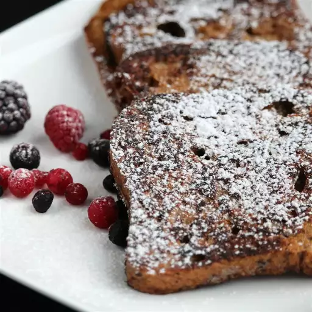

Gingerbread French Toast

Description
"Gingerbread French Toast" is a breakfast dish that transforms traditional French toast by infusing it with the warm
and spiced flavors of gingerbread. The bread is typically dipped in a mixture of eggs, milk, molasses, and spices
such as cinnamon, ginger, and nutmeg. This creates a flavorful batter that gives the French toast a festive and
aromatic quality. Once cooked, Gingerbread French Toast is often served with toppings like powdered sugar, maple
syrup, or whipped cream, offering a delightful and seasonal twist to a classic breakfast favorite.
Ingredients
- ½ cup milk
- 2 eggs
- 1 tablespoon white sugar
- 2 teaspoons rum extract
- 1 teaspoon salt
- ¼ teaspoon ground cinnamon
- ¼ teaspoon ground nutmeg
- ¼ teaspoon ground cloves
- ⅛ teaspoon ground ginger
- 4 slices white bread
- 1 tablespoon butter, or as needed
Steps
- Whisk milk, eggs, sugar, rum extract, salt, cinnamon, nutmeg, cloves, and ginger together in a bowl. Dip each bread slice into the egg mixture, turning to coat both sides.
- Melt butter in a non-stick skillet over medium heat. Add bread slices in a single layer and cook until golden brown, about 3 minutes per side.